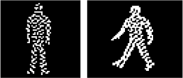
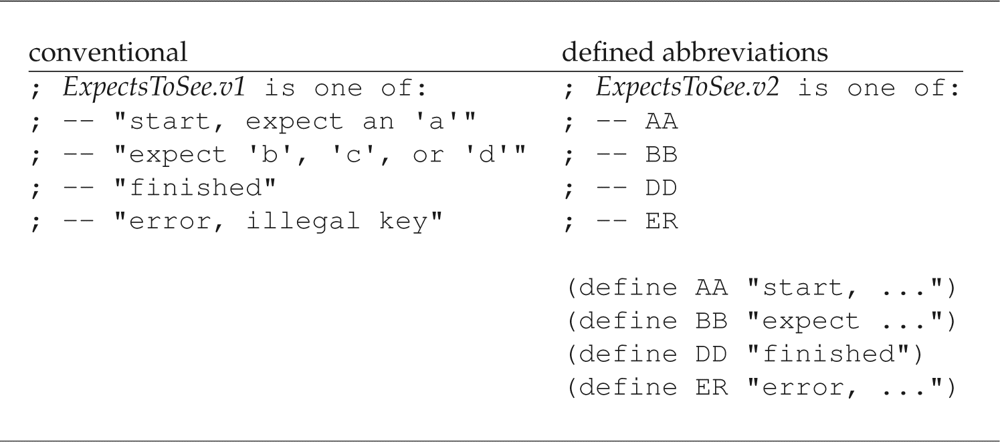
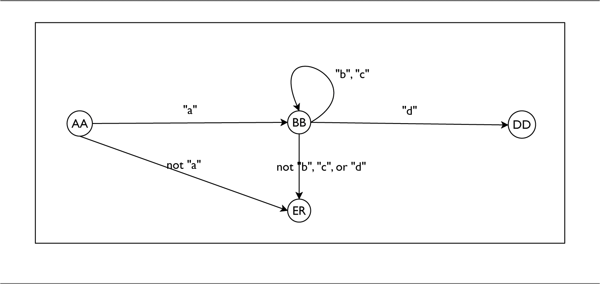

6.2 Mixing Up Worlds
This section suggests several design problems for world program, starting with simple extension exercises concerning our virtual pets.
Exercise 106. In chapter 5.11 we discussed the creation of virtual pets that come with happiness gauges. One of the virtual pets is a cat; the other one, a chameleon. Each program is dedicated to a single pet, however.
Design the cat-cham world program. Given both a location and an animal, it walks the latter across the canvas, starting from the given location. Here is the chosen data representation for animals:
; A VAnimal is either
; -- a VCat
; -- a VCham
where VCat and VCham are your data definitions from exercises 88 and 92.
Given that VAnimal is the collection of world states, you need to design
• a rendering function from VAnimal to Image;
• a function for handling clock ticks, from VAnimal to VAnimal; and
• a function for dealing with key events so that you can feed and pet and colorize your animal—as applicable.
It remains impossible to change the color of a cat or to pet a chameleon. 
Exercise 107. Design the cham-and-cat program, which deals with both a virtual cat and a virtual chameleon. You need a data definition for a “zoo” containing both animals and functions for dealing with it.
The problem statement leaves open how keys manipulate the two animals. Here are two possible interpretations:
1. Each key event goes to both animals.
2. Each key event applies to only one of the two animals.
For this alternative, you need a data representation that specifies a focus animal, that is, the animal that can currently be manipulated. To switch focus, have the key-handling function interpret "k" for “kitty” and "l" for lizard. Once a player hits "k", the following keystrokes apply to the cat only—until the player hits "l".
Choose one of the alternatives and design the appropriate program.
Exercise 108. In its default state, a pedestrian crossing light shows an orange person standing on a red background. When it is time to allow the pedestrian to cross the street, the light receives a signal and switches to a green, walking person. This phase lasts for 10 seconds. After that the light displays the digits 9, 8, ⋯, 0 with odd numbers colored orange and even numbers colored green. When the countdown reaches 0, the light switches back to its default state.
Design a world program that implements such a pedestrian traffic light. The light switches from its default state when you press the space bar on your keyboard. All other transitions must be reactions to clock ticks. You may wish to use the following images

or you can make up your own stick figures with the image library.
Exercise 109. Design a world program that recognizes a pattern in a sequence of KeyEvents. Initially the program shows a 100 by 100 white rectangle. Once your program has encountered the first desired letter, it displays a yellow rectangle of the same size. After encountering the final letter, the color of the rectangle turns green. If any “bad” key event occurs, the program displays a red rectangle.
The specific sequences that your program looks for start with "a", followed by an arbitrarily long mix of "b" and "c", and ended by a "d". Clearly, "acbd" is one example of an acceptable string; two others are "ad" and "abcbbbcd". Of course, "da", "aa", or "d" do not match.
Hint Your solution implements a finite state machine (FSM), an idea introduced in chapter 4.7 as one design principle behind world programs. As the name says, an FSM program may be in one of a finite number of states. The first state is called an initial state. Each key event causes the machine to reconsider its current state; it may transition to the same state or to another one. When your program recognizes a proper sequence of key events, it transitions to a final state.
The data definition on the right uses the naming technique introduced in exercise 61.
For a sequence-recognition problem, states typically represent the letters that the machine expects to see next; see figure 36 for a data definition. Take a look at the last state, which says an illegal input has been encountered. Figure 37 shows how to think of these states and their relationships in a diagrammatic manner. Each node corresponds to one of the four finite states; each arrow specifies which KeyEvent causes the program to transition from one state to another.

Figure 36: Two ways of writing a data definition for FSMs

Figure 37: A finite state machine as a diagram
History In the 1950s, Stephen C. Kleene, whom we would call a computer scientist, invented regular expressions as a notation for the problem of recognizing text patterns. For the above problem, Kleene would write
which means a followed by b or c arbitrarily often until d is encountered.